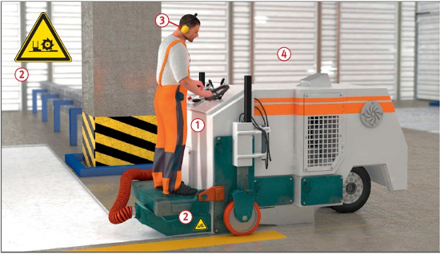

Beim Fräsen können Personen vom drehenden Fräsrotor eingezogen werden.
Weiterhin sind Belastungen durch Gefahrstoffe (z. B. Staub, Quarz) und Lärm möglich.
Allgemeines
Vor Einsatz prüfen, ob Schutzeinrichtungen
für die Fräseinrichtungen
vorhanden und in
Schutzstellung sind.
Fahrerplätze müssen über
sicher begehbare Zugänge erreicht
und verlassen werden
können. Trittstufen und Haltestangen
benutzen. Auftrittflächen
der Zugänge in trittsicherem
Zustand halten.
Fräseinrichtungen müssen bei
laufender Antriebsmaschine
durch Notabschaltung zum Stillstand
gebracht werden können.
Beim Ansetzen der Fräseinrichtung
auf der Straßenoberfläche
die Andrückkräfte so steuern,
dass sich die Straßenfräse nicht
unbeabsichtigt in Bewegung
setzen kann.
Fräsen nur vom vorgesehenen
Fahrerplatz aus betreiben .
Rückwärts gerichtete Bewegungen durch langsames
Einlassen der Fräseinrichtung
vermeiden, dabei gleichzeitige
Rückwärtsfahrbewegung ausschließen.
Während des Fräsvorganges
darf sich niemand hinter der
Maschine aufhalten.
Sind Schutzeinrichtungen für
den Fräsrotor ohne Werkzeug in
funktionslosen Zustand zu versetzen,
muss der Stillstand des
Fräsrotors selbsttätig erfolgen.
Vor dem Verlassen des Führerstandes
Fräse gegen unbeabsichtigte
Bewegungen mit den
dafür vorgesehenen Einrichtungen,
z. B. Feststellbremse,
sichern.
Vor Meißelwechsel Fahr- und
Rotorantrieb abschalten und
gegen unbefugtes Ingangsetzen
sichern.
Bei eingeschränkten Sichtverhältnissen einen Einweiser einsetzen.
Warnzeichen beidseitig an den
Schutzeinrichtungen anbringen .

Bei Fräsarbeiten in geschlossenen
Räumen emissionsarme
Antriebe wählen, bei Dieselantrieb
Partikelfilter benutzen .
Bei Arbeitsschluss und in
Arbeitspausen Straßenfräse
gegen unbefugtes Ingangsetzen
sichern.
Fräseinrichtungen vom Antrieb
trennen, wenn die Fräse umgesetzt,
verladen und transportiert
werden soll.
Beim Einsatz im öffentlichen Verkehrsraum Baustelle gemäß RSA sichern und zwischen Arbeits- und Verkehrsbereich Sicherheitsabstände gemäß ASR A5.2 einhalten.
Schutzmaßnahmen
Es sind vorrangig solche
Straßenfräsen einzusetzen, für
die die Einhaltung der Staubgrenzwerte
nachgewiesen
wurde. Solange solche Fräsen
nicht oder in nicht ausreichendem
Umfang zur Verfügung
stehen, ist das Tragen von Atemschutz
bei erkennbarer Staubentwicklung
sofort notwendig
(z. B. filtrierende Halbmasken FFP2 mit Ausatemventil oder
Atemschutzhauben P2). Entsprechenden Atemschutz auf
der Fräse vorhalten.
Im und unmittelbar neben
dem öffentlichen Verkehrsbereich
Warnkleidung tragen .
Gehörschutz benutzen .
Zusätzliche Hinweise
für das Fräsen von Belägen
mit asbesthaltigen
Zuschlagstoffen
Beim Fräsen von Belägen mit
asbesthaltigen Zuschlagstoffen
TRGS 517 beachten:
durch kontinuierliche Wasserberieselung
optimalen Staubniederschlag
gewährleisten
(Trockenfräsen nicht zulässig),
nicht in staubbelasteten Bereichen, wie der Windfahne,
aufhalten,
Funktionstüchtigkeit der
Wasserdüsen überprüfen und
gegebenenfalls reinigen,
Maschinen und Maschinenteile nass reinigen.
Prüfungen
Art, Umfang und Fristen erforderlicher Prüfungen festlegen
(Gefährdungsbeurteilung) und
einhalten, z. B.:
arbeitstäglich durch den
Maschinenführer,
nach Bedarf, mind. 1 x jährlich
durch eine "zur Prüfung
befähigte Person" (z. B. Sachkundiger).
Ergebnisse der regelmäßigen
Prüfungen dokumentieren.
Arbeitsmedizinische Vorsorge
Arbeitsmedizinische Vorsorge
nach Ergebnis der Gefährdungsbeurteilung
veranlassen (Pflichtvorsorge)
oder anbieten (Angebotsvorsorge).
Hierzu Beratung
durch den Betriebsarzt.
 .
. .
. .
.